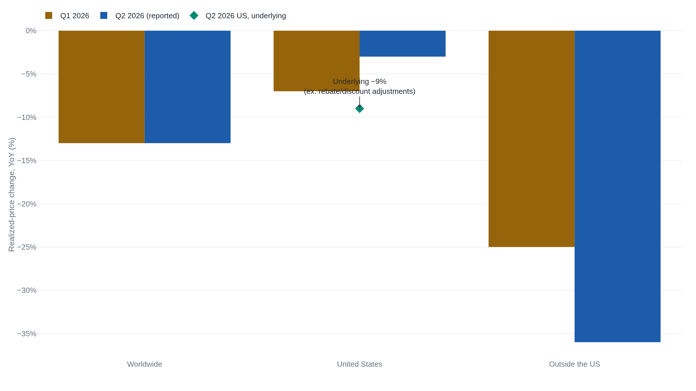

Lilly's guidance keeps rising as its prices keep falling
Lilly sells one molecule as both Mounjaro and Zepbound, and it is buying volume in newly reimbursed markets like China by accepting far less for every dose.
Selling more tirzepatide for less
Almost everything Eli Lilly sold in the second quarter of 2026 sold for less than it had a year earlier, and Lilly sold far more of it. Worldwide volume rose 60% while the realized price per unit fell 13%, and the two together lifted revenue to $23.0 billion, up 48%.1 That single trade, more volume for less price, runs through market after market. It is why full-year revenue guidance has been raised twice in six months, most recently to $85–87 billion.1
The growth comes from one molecule. Tirzepatide is sold as two brands: Mounjaro, for type 2 diabetes, and Zepbound, for obesity. Both are GLP-1 medicines, injected weekly, that quiet appetite and lower blood sugar. Between them they were $14.9 billion of the quarter's $23.0 billion, Mounjaro at $9.9 billion and Zepbound at $4.9 billion.1 This was also the first quarter to carry revenue from a third product, Foundayo, the brand name for orforglipron: a GLP-1 in a daily pill rather than a weekly injection, licensed from Chugai and recording its first $98 million.2
Realized price is revenue per unit after rebates, discounts, and negotiated reimbursement, not the list price on the label. It drops when a drug moves out of premium, cash-pay demand and into channels where an insurer or a national health service agrees to cover many more patients in return for paying much less per dose. Volume and realized price move in opposite directions by design.1
The raised guidance treats the volume as durable and the falling price as its acceptable cost. Whether that reading holds is a question about each leg on its own.
Taking the 48% apart
Lilly reports its revenue growth as two legs, volume and realized price, and nothing more. It publishes no unit counts and no separate line for product mix, so the split cannot be rebuilt from outside the company. What follows is Lilly's own decomposition, taken as reported and corroborated only by the internal consistency of the per-product and geographic tables in the same filings.1
| Geography | Volume | Realized price | Reported revenue |
|---|---|---|---|
| Worldwide | +60% | −13% | +48% |
| United States | +37% | −3% (−9%) | +33% |
| Outside the US | +113% | −36% | +80% |
The legs do not close the gap exactly. Worldwide, +60% volume against −13% price sums to +47%, a point short of the +48% reported; the residual is currency and other effects Lilly does not separately quantify in the release body.1 Outside the US the gap runs the other way: +113% against −36% implies +77%, where +80% was reported. The difference came partly from a $250 million sales-based milestone in the Jardiance collaboration with Boehringer Ingelheim, not from unit demand.1 Neither residual changes the shape of the quarter. Volume is the leg doing the work, and price is the leg being spent.
China doubled its revenue as its price fell
The trade is easiest to watch in one country. Lilly's revenue in China roughly doubled, from $466 million a year earlier to $941 million, in the same quarter its realized price outside the US fell 36%.2 The cause Lilly names is exact: Mounjaro was added to China's National Reimbursement Drug List, the formulary the state insurance system pays for.1 Listing cuts the price the state pays for each dose and, in exchange, puts the drug in front of a national pool of patients who were never going to buy it at the cash price. Mounjaro's revenue outside the US now exceeds its US revenue, $5.2 billion against $4.8 billion, a reversal from a year before.2
This is the volume-for-price trade in its cleanest form: take a far lower price per dose to reach a market you could not reach at the old one. It is also specific to Mounjaro abroad. Zepbound is still almost entirely a US product, $4.9 billion at home against $55 million elsewhere, so the ex-US price collapse is a Mounjaro-in-China story, not the whole book.2 What the raised guidance needs to know is whether that repricing is a one-time cost of entering each new market, or a floor that keeps dropping as reimbursement spreads. Two quarters of data are now on the record, which is enough to begin answering it.
Is the falling price a one-off?
It is not. Worldwide realized price fell 13% in the first quarter and 13% again in the second, a steady rate of decline rather than a single step down as one market reprices.31 Outside the US the decline is not steady but deepening, from −25% in the first quarter to −36% in the second, as China's reimbursement pricing works through more of the base.3

Only the US line looks like it is recovering, from −7% to −3%, and that improvement is an accounting artifact. Lilly states that excluding favorable adjustments to its estimates for rebates and discounts, US price would have fallen about 9%; its chief financial officer repeated the 9% figure on the earnings call.14 The first quarter's US price had leaned on a similar favorable one-time rebate adjustment.3 Read against the underlying 9%, the US is not diverging from the rest of the book. It is falling with it.
Meanwhile the US volume leg, the one the guidance leans on hardest, is slowing, from +49% in the first quarter to +37% in the second.31 A volume ramp against a falling price stays ahead only while volume growth clears the price decline by a wide margin, and that margin is narrowing from both ends at once. The worldwide price leg has now printed −13% for two straight quarters; it remains a manageable cost of growth only if that rate stops steepening while volume growth stays above it. The figure that would break the read is the ex-US line, which fell a full 11 points in a single quarter. Another step of that size, with ex-US volume cooling from its +113%, would mean price is eroding faster than volume can refill.
Three things that could slow the volume
The whole case rests on volume continuing to outrun price, so the risks worth naming are the ones that would slow the volume or drop the price faster. Three are already on the record.
The first is generic competition, arriving earlier than a durable-ramp read assumes. In July 2026 Lilly received notice that multiple generic companies had filed abbreviated new drug applications to market generic versions of Mounjaro and Zepbound before some or all of the listed patents expire.2 Such a filing is how a copycat manufacturer seeks approval to sell an equivalent of an approved drug; it opens the patent fight rather than winning it, but it dates the start of that fight to now.2
The second is a pressure Lilly is choosing: Foundayo. Management's case for the oral pill is that a small molecule can be made at scale in a way an injected peptide cannot, which is also a case for a lower price per patient.4 Its first $98 million is tiny against $23 billion,1 but as it grows it shifts the mix toward a cheaper unit and pulls blended realized price down further, even where demand is strong.
The third is a policy risk that is real but, for Lilly today, mostly latent. An April 2026 presidential proclamation placed a 100% duty on imported patented pharmaceuticals, effective July 31, 2026 for the large firms named in its Annex III.5 Two carve-outs decide the rate that actually applies. A company with a Commerce-approved domestic manufacturing plan pays 20% instead of 100%; one with a most-favored-nation drug-pricing agreement pays nothing until January 2029.5 Lilly's own 10-Q says that it and pharmaceuticals are "exempt from certain of these tariffs," while warning the exemptions "may expire, be terminated or may not apply to any future tariffs."2 Lilly is expanding US production, adding another $4.5 billion to its Indiana plants this quarter,1 and generics and biosimilars are excluded from the duty outright.6 No Lilly filing quantifies any tariff cost. It belongs here as a future risk should the exemptions lapse, not as a weight already pressing on the US price line.
What the raised guidance is really counting on
The guidance has climbed on a schedule: $80–83 billion when 2026 opened, $82–85 billion after the first quarter, $85–87 billion after the second.731 The market took the latest raise as confirmation of a durable growth story, and the quarter did clear a consensus revenue estimate of about $20.6 billion by more than two billion dollars.8
| Set | FY2026 revenue | Non-GAAP EPS |
|---|---|---|
| Feb 2026 | $80–83B | $33.50–35.00 |
| Apr 2026 | $82–85B | $35.50–37.00 |
| Aug 2026 | $85–87B | $35.50–36.50 |
The raise is not a clean volume signal. Part of it is the same rebate-and-discount estimate changes that flattered the US price line, and part is the recurring $250 million Jardiance milestone, which is contractual rather than demand.1 The earnings line moved the other way. Non-GAAP EPS guidance was cut at the midpoint, to $35.50–36.50 from $35.50–37.00.13 The quarter carried $3.03 of acquired research charges, more than offsetting a $2.78 underlying increase.1 The revenue raise and the earnings trim describe the same company.
The growth is real, and it is bought. Worldwide volume up 60% against price down 13% is not a close trade this quarter. It stays a winning one only while the price legs stop steepening. Worldwide has held at −13% for two quarters. The figure that would settle the question is the ex-US line, which fell from −25% to −36% in a single one. Another drop of that size, with ex-US volume cooling from +113% and Foundayo's cheaper pill growing into the mix, would put price eroding faster than volume can refill it. The July generic filings start the same clock from the patent side.12
Sources
- U.S. Securities and Exchange Commission · Eli Lilly Q2 2026 earnings release (Form 8-K, Exhibit 99.1)
- U.S. Securities and Exchange Commission · Eli Lilly Form 10-Q, quarter ended June 30, 2026
- U.S. Securities and Exchange Commission · Eli Lilly Q1 2026 earnings release (Form 8-K, Exhibit 99.1)
- StockAnalysis · Eli Lilly Q2 2026 earnings call transcript
- The White House · Adjusting Imports of Pharmaceuticals and Pharmaceutical Ingredients into the United States (proclamation)
- Crowell & Moring · Section 232 tariffs on patented pharmaceutical imports
- U.S. Securities and Exchange Commission · Eli Lilly Q4 and full-year 2025 earnings release (Form 8-K, Exhibit 99.1)
- CNBC · Eli Lilly reports second-quarter 2026 results